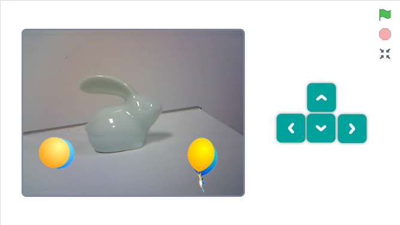
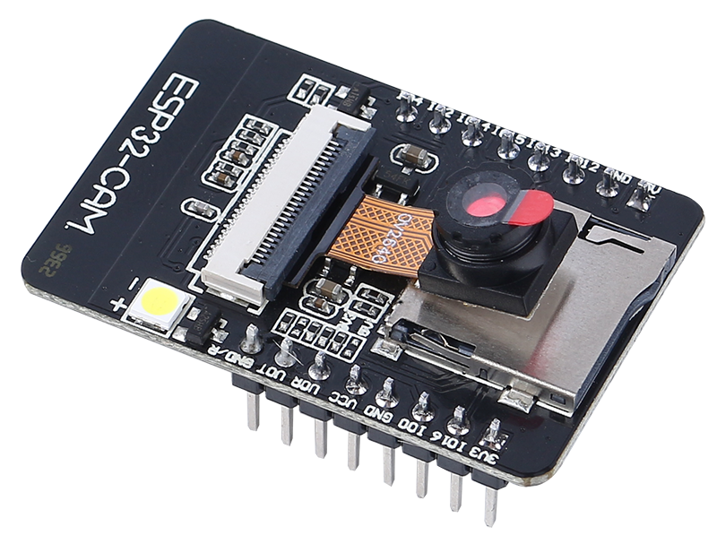
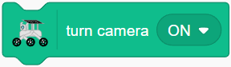
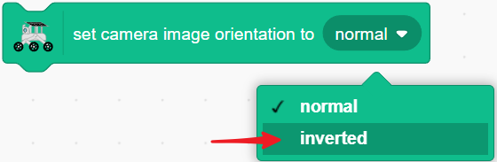
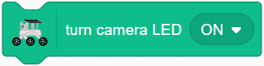
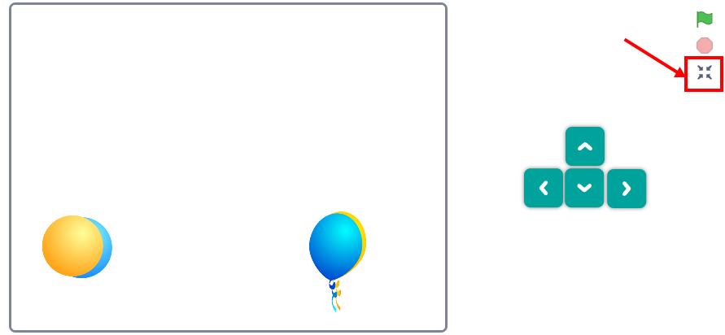
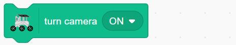
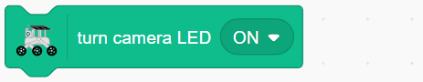
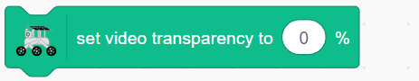
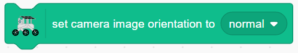

Note
Hello, welcome to the SunFounder Raspberry Pi & Arduino & ESP32 Enthusiasts Community on Facebook! Dive deeper into Raspberry Pi, Arduino, and ESP32 with fellow enthusiasts.
Why Join?
Expert Support: Solve post-sale issues and technical challenges with help from our community and team.
Learn & Share: Exchange tips and tutorials to enhance your skills.
Exclusive Previews: Get early access to new product announcements and sneak peeks.
Special Discounts: Enjoy exclusive discounts on our newest products.
Festive Promotions and Giveaways: Take part in giveaways and holiday promotions.
👉 Ready to explore and create with us? Click [here] and join today!
Lesson 12: See Through Your Rover’s Eyes
Now that your rover can nod its camera, let’s give it real vision! In this lesson, you’ll learn how to see exactly what your Mars Rover sees through its camera.
Watch live video from your rover’s perspective as it explores - see Martian landscapes, discover interesting rocks, and navigate like a real space explorer!

Learning Objectives
View live camera footage from your Mars Rover in real-time
Combine camera viewing with servo control for interactive exploration
Meet Your Rover’s Eyes: ESP32 CAM
Say hello to the ESP32 CAM - your rover’s powerful vision system! This amazing module is like giving your rover super-smart eyes.
{kind=link}

The ESP32 CAM does two incredible things:
Takes photos and video of whatever your rover is looking at
Sends the video directly to your phone or computer
It’s like being right there on Mars with your rover! You’ll see everything it sees, in real time. Ready to start exploring through your rover’s eyes?
Exploring Your Rover’s Camera System
Drag a
turn camera ONblock and click it - watch the stage turn into a live camera view from your rover!
If the camera view appears upside down, use
set camera image orientation to invertedto fix it.
Need more light? Use
turn camera LED ONto activate the camera’s built-in light.
Create Camera Control Buttons
Let’s build a camera control panel! Create four sprites and arrange them neatly.

Program each button:
Ball 1: Turns camera OFF

Ball 2: Turns camera ON and sets orientation

Balloon 1: Turns LED ON

Balloon 2: Turns LED OFF

Save space by stacking the controls - they’ll pop out when needed!

Add
go to back layerto each sprite - clicking one button reveals the next, creating a cool toggle effect.
Click the stage expansion button to enter the full control mode.

You’ll now watch live video from your rover’s perspective as it explores - see Martian landscapes, discover interesting rocks, and navigate like a real space explorer!
Camera Control Blocks
Turn the camera on or off. When on, the stage shows live video from your rover!

Control the camera’s LED light - perfect for dark explorations.

Adjust how see-through the camera view appears.

Flip the camera view if it appears upside down.
